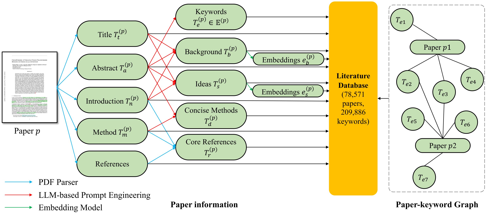
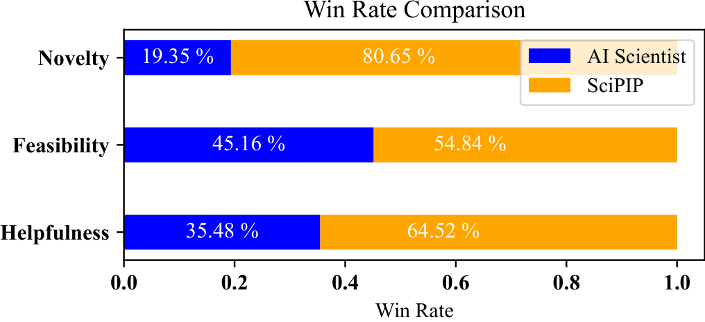
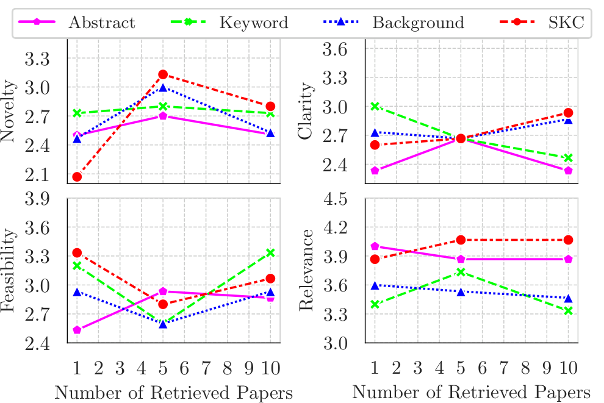

Brainstorm-Based
先把用户 query 改写成"每个术语都解释过、为什么难都说清"的详细背景（模型对过短 query 容易误读），再让 LLM 生成 3–4 个 idea。副产物：从脑暴 idea 里再提关键词，并回灌给检索路扩充检索词。
一个"检索增强的科研 idea 生成器"：把 7.8 万篇顶会论文重摘要成结构化五元组存进 Neo4j 图数据库，用语义 + 关键词 + 共引三路互喂的方式检索，再用检索推演 + 自由头脑风暴双路生成并融合 idea。
最短理解：SciPIP 押注的是"idea 生成的质量瓶颈在检索，而检索的瓶颈在索引粒度"。它不检索原文，而是先让 GPT-4o 把每篇论文重写成 关键词 / 背景 / idea / 精简方法 / 引用 五元组，按字段分别编码入库——之后无论检索（拿用户背景对论文"背景"字段匹配）还是生成（把"精简方法"喂给 LLM 提炼灵感），操作的都是这些结构化摘要。这个公开下载的文献图数据库，也是四位 ICLR 审稿人唯一公认的原创贡献。
这篇论文有两个差异很大的版本：ICLR 2025 投稿版（2024-09，三拒一弱拒后撤稿）和 arXiv v2（2025-02，20 页 ICML 模板）。v2 逐条回应了评审的主要批评——对照读比单独读 v2 信息量大得多（评审全文见评审存档页）。
| ICLR 评审批评 | ICLR 投稿版 | arXiv v2 的回应 | 核对 |
|---|---|---|---|
| LLM-as-judge 不可信（4/4 位提及） | novelty/feasibility 全由 GPT-4o 打分 | 改为 12 位人类评审（AI 方向研究生，至少 1 篇一作顶会），5 维度打分 + 成对比较 | 已修复 |
| 数据污染（GPT-4 截止 vs ACL 2024 预印本） | 未排查 | 明确只选正式发表前未上 arXiv 的 ACL 2024 / CVPR 2024 论文做测试背景 | 已修复 |
| 嵌入模型过时（SentenceBERT） | SentenceBERT | 换成 jina-embeddings-v3 | 代码确认 |
| 只做 NLP 却叫 "Scientific" | 仅 NLP，5 万篇库 | 库扩到 7.8 万篇（9 个 ML/NLP/CV 顶会近十年），实验加了 CV 域；但标题没改，limitation 仍只承认"聚焦 NLP+CV" | 部分修复 |
| 与 SciMON 差距边际（6bY3） | 有 SciMON 检索对比实验 | v2 仍引用 SciMON，但删掉了与它的对比实验，只比 GPT-4o 裸生成和 AI Scientist | 回避 |
| 检索没上标准 IR 基准 / 无 nDCG、Precision | 只报自建集 Recall | v2 消融只比自家变体（Abstract/Background/Keyword/SKC），仍无 DORIS-MAE、SciDocs 等外部基准 | 未修复 |
| 方法原创性有限（技术组合） | — | 方法主体未变：仍是实体匹配 + 语义嵌入 + 共引 + 聚类的组合 | 本质未变 |
发表状态：v2 用了 \usepackage[accepted]{icml2025} 模板，暗示投中了 ICML 2025（主会或 workshop），但截至 2026-08 DBLP 只收录 arXiv 版，未见正式会议记录——按 arXiv 预印本对待。
出发点：通用检索要么关键词匹配（丢语义），要么整段/定长分块编码（噪声大、一段话混多种信息）。SciPIP 认为服务 idea 生成的检索只需要两类信息——该领域的问题/挑战（背景）和文献给出的想法/方法，所以先摘要再建索引。

(关键词)-[出现于]->(论文)。论文-论文、关键词-关键词之间都没有边；"关键词邻域"是查询时经 (词A)→(论文)←(词B) 二跳现算共现篇数（≥7 才算相关），不是预存的关系。代码确认（paper_client.py）看清 Neo4j 在这里的实质：它不是"知识图谱方法"，而是一个方便的容器——五元组、原文、四路嵌入向量全是论文节点的属性，一个库同时兼任文档库、向量库和共现索引，还能整目录打包分发。全系统没有用到任何图算法（无 PageRank、无社区发现），图查询最深两跳；共引检索甚至不走图——引用列表是节点上的普通属性，启动时在内存里建共引计数字典查询。同样的信息用倒排索引 + 一张共现表也能实现。这呼应了 ICLR 审稿人的判断：图是工程容器，不是方法贡献。

用户背景编码后，与库中论文的背景字段嵌入做余弦相似，取 top-5。检索的是"面对相似挑战的论文"，而不是"文字相似的论文"。
从用户 query（LLM 提取）和 N₁ 论文（库中直取）收集关键词，再做关键词邻域扩展：含关键词 T 的论文，其其余关键词也进候选集（配过滤规则：两个关键词需共现于 ≥7 篇论文）。用扩展后的关键词集回库里捞论文。
对 N₁∪N₂ 中每篇论文，把与它最常被同时引用的 1 篇论文也拉进来——捕捉"关键词和语义都不像、但研究者已发现潜在关联"的文献。
N₁∪N₂∪N₃ 可达数百篇。按嵌入相似度（阈值合并的并查集）聚类，从各簇轮流取分数最高者，直到凑满 10 篇——模拟"写背景时只引代表作"的习惯，保多样性、去冗余。
代码里的真实顺序（SNKGRetriever.retrieve_paper）：语义 top-5 → 从这 5 篇取实体并与用户实体合并 → 同义词/邻域扩展 → 实体找论文 → 共引扩展 → 全体按"与用户背景的嵌入相似度"打分 → 聚类轮选 top-10。与论文叙述一致，但注意最终排序只用背景相似度（配置 s_bg=1.0，contribution/summary/abstract 权重全为 0）。

先把用户 query 改写成"每个术语都解释过、为什么难都说清"的详细背景（模型对过短 query 容易误读），再让 LLM 生成 3–4 个 idea。副产物：从脑暴 idea 里再提关键词，并回灌给检索路扩充检索词。
不用题目/摘要（太浅）也不用全文（太长），而是用 few-shot 示范让 LLM 把检索到论文的方法节摘要成"精简方法"；再针对用户问题从每篇提炼 inspiration（判定无价值则丢弃），最后综合生成 idea。
融合与扩写：两路 idea 合并整合成约 5 个，再扩写成详细版——扩写时从库里取一篇已有论文的"精简方法"当格式示范，因为纯指令控制不了产出的风格与详略。这个"拿库存摘要当 demonstration"的技巧在全管线出现了两次（方法摘要 few-shot、idea 扩写示范），是工程上最值得抄的细节。
NLP 域：脑暴路 novelty≥4 占 26.02%、可行性只有 24.39%；检索路 novelty 22.16%、可行性 35.33%——脑暴更新颖、检索更可行，方向相反。融合版两头都拿到最高（novelty 27.22% / feasibility 38.46%），双路设计的互补性得到了消融级别的支撑。
SciMON（ACL 2024，本档案已有精读）是这条路线的参照原点，也是 SciPIP 被拒的参照系。下表基于两边论文与代码的实际内容逐项对比——哪些是继承、哪些是真差异，不采信任何一方的自我表述。
| 维度 | SciMON（2023-05 / ACL 2024） | SciPIP（2024-09 / arXiv v2） | 差异性质 |
|---|---|---|---|
| 任务输入 | 背景句 + 种子术语（取自真实论文的 ground truth，半开卷设定） | 纯用户背景段落，无种子提示 | SciPIP 设定更接近真实使用 |
| 输出 | 一句话 idea | 约 5 个 idea，每个扩写成带细节的段落 | 粒度差异，直接影响可比性 |
| 文献如何变成"知识" | IE 流水线（句子分类 → PL-Marker 实体抽取 → SciCo 共指 → ScispaCy）从 67,408 篇 ACL 论文抽出实体级 used-for 知识图（19.7 万节点）；抽取误差层层累积，关系抽取精度仅 65% | GPT-4o 整篇重摘要成五元组（背景/idea/精简方法/关键词/引用），78,571 篇 9 个顶会，分字段嵌入入 Neo4j | 真差异 ①：抽取式 → 生成式，是 LLM 时代对 IE 时代的整体替换 |
| 灵感的单位 | 实体/术语（从相似旧背景的 idea 里取目标实体、从 KG 取邻居实体，均值 10.8 个词条塞进输入） | 方法摘要（把检索论文的"精简方法"few-shot 摘要后，逐篇提炼 inspiration 段落） | 真差异 ②：词条级提示 vs 段落级方法迁移，SciPIP 的 idea 细节量由此而来 |
| 三路检索信号 | 语义近邻（SentenceBERT 找相似旧背景）+ KG 一跳邻居 + 引文近邻（被引论文标题 top-5） | 语义（背景字段嵌入 top-5）+ 关键词共现邻域 + 共引统计（各 1 篇） | 继承：信号框架相同，实现细节不同——这正是审稿人"差距边际"的依据 |
| 概念图谱的性质 | 有语义类型的关系图（used-for：A 用于 B） | 无类型的论文-关键词共现二部图（见 02 节实质框） | SciMON 的图反而更"知识图谱"；SciPIP 的图是工程容器 |
| 新颖性机制 | 事后查重迭代：生成 → 与训练集旧 idea 比相似度（SentenceBERT，阈值 0.6）→ 超阈值强制"显著不同地重写"，实测至多 2 轮 | 事前双路分工：脑暴路管新颖、检索路管可行，融合平衡；没有任何显式查重环节 | 真差异 ③：方向相反，且互不包含——SciMON 的招牌组件恰恰是 SciPIP 没继承的 |
| 模型形态 | 训练时代产物：微调 T5-large + 对比损失（GPT-3.5/4 few-shot 为对照组） | 零训练，纯 prompt 编排 GPT-4o / GPT-4o-mini | 时代差异：2023 中到 2024 底，微调价值被通用模型抹平 |
| 评测 | 人评为主，且做了最狠的一项：与真实论文 idea 对比——85% 场合真实 idea 被判显著更深（自曝上限）；全部模型输出随仓库公开 | v1 用 GPT-4o 当裁判（被 ICLR 四位评审齐轰）→ v2 改 12 人评审；无与真实论文的直接对比，无人评材料公开 | SciMON 的评测更自我批判；SciPIP v2 的人评规模更大但透明度低 |
| 代码工程 | 13.1k 行研究脚本堆：无统一入口，发布版迭代脚本带必崩 bug，编码器论文（mpnet）与代码（MiniLM）不一致 | 7.5k 行完整系统：Streamlit 前端、Neo4j 库 dump 公开下载、多家 LLM API 适配（τ 与聚类嵌入两处与论文不一致） | 研究原型 vs 可分发工具，SciPIP 明显占优 |
| 发表命运 | ACL 2024 主会 | ICLR 2025 撤稿，后续发表状态存疑 | 开创任务的可以粗糙，跟进的必须显著更好 |
① 文献知识的来源：IE 抽取（误差累积、实体级）→ LLM 重摘要（质量高、段落级）——这是实质升级，但属于"用更强的模型重做基础设施"，而非新方法；② 灵感单位：词条提示 → 方法迁移，SciPIP 的 idea 更具体主要来自这里；③ 新颖性机制方向相反：SciMON 事后查重重写、SciPIP 事前分路，两者互不包含——理论上最强的系统应该两个都要。而三路检索信号框架是原样继承的，这正是 ICLR 审稿人认定"组合创新、差距边际"的客观依据；SciPIP v2 删掉与 SciMON 的对比实验（见 01 节），等于默认了这个判断。
约 7.5k 行 Python，是四个已归档 idea 生成项目里工程完成度最高的：图数据库、检索器工厂、Streamlit 交互前端（一键式 / 分步式两种页面）、多家 LLM API 适配，且文献库 dump 公开可下。
code/
├── app.py + src/app_pages/ # Streamlit 前端：one-click / step-by-step 两种生成模式
├── src/generator.py # CLI 入口：backgrounds JSON → 检索 → 双路生成 → ideas JSON
├── src/paper_manager.py # 建库：爬虫 → PDF 解析 → GPT-4o 摘要五元组 → 写入 Neo4j
├── src/utils/paper_client.py # Neo4j 客户端（1206 行）：节点/边/嵌入的全部读写
├── src/utils/paper_retriever.py # Retriever 工厂：SN / KG / SNKG 三种检索器 + 并查集聚类
├── src/utils/llms_api.py # 全部生成环节的 prompt 封装（problem/inspiration/idea/expand…）
├── src/utils/scipdf/ # PDF 解析（GROBID 系）
├── src/prompt/ + assets/prompt/ # prompt 模板（XML 管理）
└── configs/datasets.yaml # 超参数：检索路数、阈值、嵌入模型
| 论文声称 | 代码位置 | 实际情况 | 核对 |
|---|---|---|---|
| jina-embedding-v3 编码 | configs/datasets.yaml | jinaai/jina-embeddings-v3，task 用 text-matching（对称嵌入）；注释里还留着 MiniLM / llm-embedder 的旧选项 | 代码确认 |
| 语义检索 TopK=5 | sn_num_for_entity: 5 | SNKG 检索器里语义路确实取 5 篇（用于扩实体）；单独的 SN 检索器则取 100 篇再截 10 | 代码确认 |
| nCOCITE=1、nPapers=10 | cocite_top_k: 1 / all_retrieve_paper_num: 10 | 一致 | 代码确认 |
| 聚类阈值 τ=0.8 | similarity_threshold: 0.95 | 仓库默认 0.95（注释掉的备选是 0.55），与论文的 0.8 都对不上；阈值直接决定去冗余强度 | 论文-代码不一致 |
| 聚类用 summary 嵌入相似度 | filter_related_paper() | 聚类嵌入是四字段加权和，而权重配置 s_bg=1.0、summary=0——实际用背景嵌入聚类，非论文所述 summary | 论文-代码不一致 |
| "关键词"（v2 用语） | 全代码 | 代码里从 prompt 到 Neo4j 节点全叫 entity——ICLR 版术语的遗留，v2 只改了论文措辞 | 代码确认 |
| 库构建管线可复跑 | paper_manager.py | 爬取（按会议/年份）→ 解析 → 摘要 → 入库全流程在；但 7.8 万篇 × GPT-4o 摘要的成本自负，好在成品库 dump 可直接下载 | 代码确认 |
| 评测 | 仓库内 | 无任何人评相关代码/数据（打分表、评审指南均未随仓库发布）；ai_scientist_idea.py 只是给对比实验准备 AI Scientist 输入的脚本 | 审计发现 |
复现门槛（比看上去低）：装 Neo4j → 下载官方库 dump 替换 data 目录 → 配 MODEL_TYPE/MODEL_NAME/MODEL_API_KEY（OpenAI 兼容接口即可）→ streamlit run app.py。不需要 GPU 训练，嵌入模型 jina-v3 自动下载。生成质量依赖所配的 LLM。
设置：NLP 域用 GPT-4o 生成、CV 域用 GPT-4o-mini（成本考虑，作者自己把 CV 的 clarity 偏低归因于此）；测试背景取自 34 篇 ACL 2024 + 25 篇 CVPR 2024（均未预发布 arXiv，规避 2023-10 截止的训练数据污染）；评审为 12 位 AI 方向研究生/博士生（至少 1 篇一作顶会），按 novelty / clarity / feasibility / relevance 打 0–5 分 + helpfulness 二值 + 成对比较。来源：Sec 4.1。
| 域 | 方法 | Novelty | Clarity | Feasibility | Relevance | Helpful |
|---|---|---|---|---|---|---|
| NLP (GPT-4o) | GPT-4o 裸生成 | 16.50% | 16.50% | 18.45% | 64.08% | 38.83% |
| AI Scientist | 20.00% | (100%)* | 23.33% | — | 46.67% | |
| SciPIP 单路（脑暴 / 检索） | 26.02 / 22.16% | 34.15 / 31.74% | 24.39 / 35.33% | 62.60 / 68.26% | 51.22 / 49.70% | |
| SciPIP 双路 | 27.22% | 36.69% | 38.46% | 66.86% | 53.25% | |
| CV (GPT-4o-mini) | GPT-4o 裸生成 | 13.04% | 16.30% | 14.13% | 42.39% | 47.83% |
| SciPIP 双路 | 22.41% | 30.17% | 26.72% | 46.55% | 74.14% |
* AI Scientist 的 clarity 100% 是因为它连可运行代码一起生成，解释天然清楚；它的 idea 部分直接取自官方仓库、背景与 SciPIP 不同——这行数字的可比性有限（论文自己加了脚注）。成对比较里（图 4），双方在相同背景下各生成约 30 个 idea，SciPIP 的 novelty 胜率 80%，feasibility/helpfulness 也占优。


一个被评审逼成熟的工程系统：方法本身仍是"已有技术的组合"（这点从 ICLR 版到 v2 没有变，评审的原创性批评依然成立），但 v2 用 12 人评审换掉了 LLM 裁判、排查了数据污染，而它真正的可留存资产——7.8 万篇顶会论文的五元组 Neo4j 图库（公开 dump）+ 全流程可跑的系统——比论文的方法论贡献更有价值。
① 它的文献库构建方案（LLM 重摘要成五元组 + 分字段嵌入 + 论文-关键词图）是"自建可检索文献底座"的一个完整参考实现，与档案里数据源/基础设施调研直接相关；② 公开的 Neo4j dump 可直接拿来做检索实验的起点；③ "脑暴管新颖、检索管可行"的消融结论对设计 idea 生成管线有直接指导意义；④ 与 SciMON / ResearchAgent / AI Scientist 同属 idea 生成线，其撤稿评审 + 大修的完整记录（见评审存档）本身就是这个方向评审标准的样本。
建议归入「简单（有实质但贡献有限）」：系统真实、工程完整、数据资产公开且独有；但方法为组合创新、检索评测内循环、人评无一致性报告、发表状态存疑。与 ResearchAgent（同档）相比，它胜在开源完整度（库 dump + 全管线可复跑），输在学术原创性与发表记录。待你过目后定档。